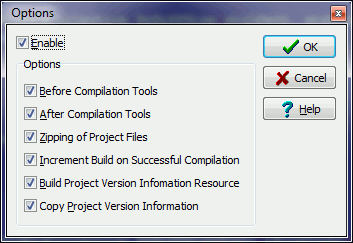

This dialogue allows you to enabled or disabled various parts of the Integrated Testing Helpers functionality for the whole of the project group (all projects in the group).
Enable: This enables or disables ALL options for ALL projects in the project group.
Before Compilation Tools: This enables or disables the running of tools before a project is compiled for ALL projects in the project group.
After Compilation Tools: This enables or disables the running of tools after a project is compiled for ALL projects in the project group.
Zipping of Project Files: This enables or disables the zipping of the project files for ALL projects in the project group.
Increment Build on Successful Compilation: This enables or disables the incrementation of the projects build number after a successful compilation ALL projects in the project group.
Build Project Version Information Resource: This enables or disables the building of the projects version information resource for ALL projects in the project group.
Copy Project Version Information: This enables or disables the copying of build number information from one project to another for ALL projects in the project group.